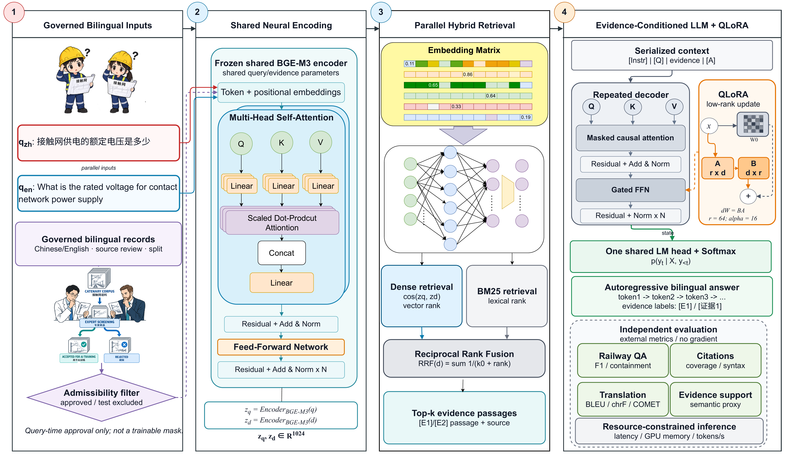
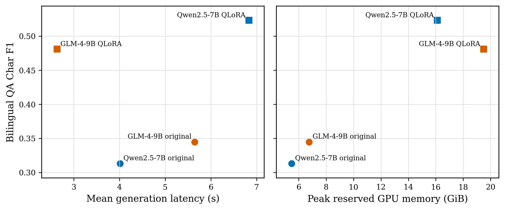
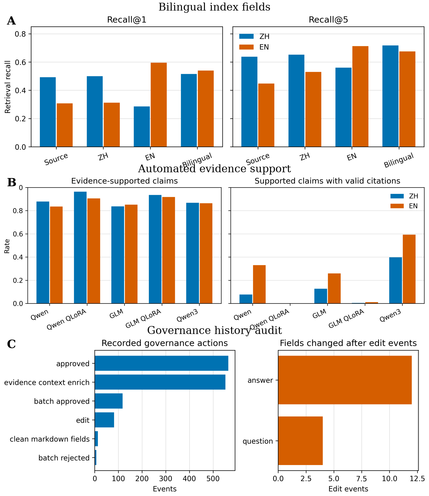

| 编号 | 英文原文 | 中文原文 | 人工修改 |
|---|---|---|---|
| Abstract | |||
| 0001 | Purpose: The international expansion of railway technology has increased demand for bilingual vocational education, yet railway regulations, technical terminology and teaching materials remain difficult to access consistently across languages. Because most vocational institutions and local research teams operate with limited computing resources, this study develops a knowledge-enhanced domain large language model for bilingual railway question answering that can be adapted and evaluated on a single workstation. Design/methodology/approach: A reviewed bilingual railway corpus was split by knowledge-pair identifier into training, validation and held-out records. BM25 lexical retrieval and BGE-M3 dense retrieval were combined by reciprocal rank fusion to supply railway evidence to Qwen2.5-7B and GLM-4-9B. The models were adapted with completion-only QLoRA and compared with their original versions and a Qwen3-14B reference through held-out domain QA, retrieval-augmented generation and measured resource use. Findings: Hybrid retrieval achieved Evidence Recall@5 of 0.715 in Chinese and 0.708 in English, and the bilingual-field index produced the highest balanced mean of 0.696. Qwen QLoRA increased held-out character-level F1 from 0.189 to 0.398 in Chinese and from 0.437 to 0.648 in English. Adding approved hybrid evidence improved Answer F1 for every evaluated generator in both languages; Qwen QLoRA reached 0.660 and 0.651. All evaluated model conditions fitted within the 24 GB GPU boundary. Originality/value: The study demonstrates that lexical-dense evidence fusion and parameter-efficient adaptation can be combined to specialise medium-sized large language models for bilingual railway education under realistic local-computing constraints. The results distinguish gains from retrieved knowledge and gains from model adaptation, providing a practical basis for developing vertical-domain railway language models without multi-GPU training. Keywords: railway domain large language model; bilingual vocational education; hybrid retrieval; retrieval-augmented generation; QLoRA; parameter-efficient fine-tuning | 领域适配 | |
| Introduction | |||
| 0002 | The international expansion of high-speed railway construction, operation and technical cooperation has increased demand for bilingual vocational education [lawrence2019hsr,xu2018education]. Railway personnel and learners working across national and linguistic settings must understand operating rules, safety procedures, equipment terminology and teaching materials that are often written first in Chinese. The challenge is therefore not limited to translating isolated terms. Educational support must connect a question in either language to the relevant railway knowledge and produce an answer that remains grounded in technical evidence. | 摘要 | |
| 0003 | Large language models offer a means of organising and communicating this knowledge, but general-purpose models are not trained to reproduce the terminology, evidence boundaries and procedural detail of a specific railway corpus. Their fluent responses may also obscure whether an answer comes from an applicable regulation or from parametric generation. Railway studies have explored specialised models for safety, rail design, track management, prognostics, driver advice and interactive training [zheng2023trafficsafety,lahnalampi2024rail,wang2024phm,song2025railway,luo2025driver,li2025training], while broader reviews continue to identify reliability and deployment as open problems [wandelt2024transport]. A railway domain model therefore needs both external evidence access and adaptation to the language and answer patterns of the target knowledge base. | 研究背景：铁路技术国际化扩大了双语职业教育需求，但铁路规章、专业术语和教学材料仍 难以跨语言一致获取。多数职业院校和地方研究团队的计算资源有限，因此本文研究一种可在单 工作站上完成适配与评价的知识增强型铁路垂直领域大语言模型，用于支持双语铁路知识问答与 国际化知识交流。 研究方法：研究构建经审核的双语铁路语料，并按知识对标识符划分训练、验证和留出记录。 BM25 词法检索与 BGE-M3 密集检索通过倒数排名融合，为 Qwen2.5-7B 和 GLM-4-9B 提供 铁路证据。两种模型采用仅答案监督的 QLoRA 完成领域适配，并与原始模型及 Qwen3-14B 参 考模型进行留出领域问答、检索增强生成和资源使用对比。 研究结果：混合检索在中文和英文上的证据 Recall@5 分别达到 0.715 和 0.708，双语字段索 引取得最高的跨语言均衡均值 0.696。Qwen QLoRA 将中文留出问答字符级 F1 从 0.189 提升 至 0.398，将英文从 0.437 提升至 0.648。加入审批混合证据后，所有受评估生成器在两种语言 上的 Answer F1 均有所提高，Qwen QLoRA 达到 0.660 和 0.651。全部受评估模型条件均符合 24 GB GPU 边界。 研究结论：词法—密集证据融合与参数高效适配能够在现实的本地计算条件下共同专门化中 等规模大语言模型。检索知识和模型适配带来的增益可以分别验证，为无需多 GPU 训练的铁路 垂直领域大语言模型提供了实践依据。 关键词：铁路垂直领域大语言模型；双语职业教育；混合检索；检索增强生成；QLoRA；参 数高效微调 | |
| 0004 | Computing availability is a second constraint. Many vocational institutions and local research teams cannot maintain multi-GPU training clusters or depend continuously on commercial cloud inference. This makes full-parameter adaptation of large models difficult to reproduce and expensive to maintain. Quantised low-rank adaptation offers a more realistic route: a 7B or 9B model can be specialised on a single 24 GB GPU while the base weights remain frozen. Resource constraint is therefore part of the research problem rather than a secondary deployment detail. | 1 引言 高速铁路建设、运营和技术合作的国际化扩大了双语职业教育需求 (Lawrence et al., 2019; Xu, 2018)。跨国家和语言环境工作的铁路人员与学习者，需要理解往往首先以中文发布的运 营规章、安全程序、设备术语和教学材料。因此，问题并不只是翻译孤立术语，而是要把任一 语言提出的问题连接到相关铁路知识，并生成有技术证据支撑的答案。 大语言模型为组织和交流这些知识提供了可能，但通用模型并未针对特定铁路语料中的 术语、证据边界和程序细节进行训练。流畅的回答还可能掩盖内容究竟来自适用规章还是参 数化生成。既有研究已探索铁路安全、设计、轨道管理、预测性维护、司机建议和交互式培训 中的专用模型 (Zheng et al., 2023; Lahnalampi, 2024; Wang and Li, 2024; Song et al., 2025; Luo et al., 2025; Li et al., 2025)，相关综述仍将可靠性和部署列为开放问题 (Wandelt et al., 2024)。因此，铁路领域模型既需要访问外部证据，也需要适配目标知识库的语言和回答方式。 计算条件构成第二项约束。许多职业院校和地方研究团队无法维持多 GPU 训练集群，也 难以持续依赖商业云端推理。全参数适配大型模型因而难以复现且维护成本较高。量化低秩 适配提供了更现实的路径：在基础权重冻结时，7B 或 9B 模型可使用单块 24 GB GPU 完成 领域专门化。因此，资源限制是本文方法设计和实验评价的基本条件，而非次要部署细节。 | |
| 0005 | The study develops and evaluates a knowledge-enhanced railway domain LLM through two complementary mechanisms. First, BM25 and BGE-M3 rankings are fused to improve access to bilingual railway evidence. Second, completion-only QLoRA adapts Qwen2.5-7B and GLM-4-9B to held-out railway question answering within a single-workstation resource boundary. Controlled comparisons separate retrieval effectiveness, adaptation gains, retrieval-augmented answer quality and measured computing cost. This design tests whether retrieved knowledge and parameter-efficient adaptation can jointly strengthen a vertical-domain model without assuming that a larger general model is sufficient. | 本文通过两种互补机制构建并评价知识增强型铁路领域大语言模型。第一，融合 BM25 与 BGE-M3 排名，提高双语铁路证据获取能力；第二，使用仅答案监督的 QLoRA，在单工 作站资源边界内适配 Qwen2.5-7B 和 GLM-4-9B 的铁路领域问答能力。受控对比分别测量检 索效果、适配增益、检索增强答案质量和计算成本，以检验检索知识与参数高效适配能否共同 强化垂直领域模型。 | |
| Related work | |||
| Knowledge-enhanced large language models | |||
| 0006 | Knowledge-enhanced large language models combine parametric generation with an externally maintained evidence collection [lewis2020rag]. This arrangement is useful for railway education because regulations and teaching records can be revised without retraining every model parameter. It also supports explicit links between an answer and its source. Retrieval quality and generation quality remain separate concerns: a retriever may miss the relevant passage, while a generator may fail to use evidence that was retrieved correctly. The present experiments therefore measure evidence access and answer quality independently. | 2 相关工作 2.1 知识增强型大语言模型 知识增强型大语言模型把参数化生成与外部维护的证据集合结合起来 (Lewis et al., 2020)。这种方式适合铁路教育，因为规章和教学记录可以修订，而无需重新训练模型的全部 参数，同时还能建立答案与来源之间的明确联系。检索质量与生成质量仍是两个不同问题： 检索器可能遗漏相关段落，生成器也可能未能利用已经正确检索的证据。因此，本文分别测 量证据获取和答案质量。 知识表示和过程状态仍有必要，因为证据记录必须保留来源与资格元数据 (Hübscher et al., 2021)。本文以这些控制决定哪些铁路记录可以进入检索，并防止确切留出记录被返回。 它们服务于领域模型评价，但不是本文的主要研究对象。 | |
| 0007 | Knowledge representation and process state remain relevant because evidence records must retain their source and eligibility metadata [hubscher2021knowledge]. In this study, those controls define which railway records may enter retrieval and prevent exact held-out records from being returned. They support the evaluation of the domain model but are not treated as the primary research object. | 2.2 铁路教育的混合检索 生成式人工智能可以支持解释、反馈和学习资源访问，但教育研究也指出了事实可靠性、 学习者过度依赖和来源不透明等风险 (Kasneci et al., 2023; UNESCO, 2023)。教育 RAG 通过 使答案以课程或机构材料为条件，部分缓解这一问题。在双语铁路教育中，精确术语和规章编 号有利于词法匹配，而不同表述的中英文问题则受益于语义检索。因此，BM25 与 BGE-M3 提 供互补的证据排名，倒数排名融合可在不要求两种分数同尺度的条件下合并结果 (Robertson and Zaragoza, 2009; Cormack et al., 2009; Chen et al., 2024)。 铁路应用提供了相关案例。RSChat 面向铁路安全问答 (Li et al., 2024)，已有大语言模 型培训助手在铁路调度和职业培训中得到评估 (Li et al., 2025)；其他系统则面向列车司机建 议和应急响应生成 (Luo et al., 2025; Huang et al., 2026)。本文进一步开展受控跨语言检索比 较，并检验检索证据如何改变原始模型、适配模型和较大参考模型的答案。 | |
| Hybrid retrieval for railway education | |||
| 0008 | Generative AI can support explanation, feedback and access to learning resources, but education research has identified risks involving factual reliability, learner over-reliance and opaque provenance [kasneci2023chatgpt,unesco2023guidance]. Educational RAG addresses part of this problem by conditioning an answer on course or institutional material. In bilingual railway education, exact terminology and regulation identifiers favour lexical matching, whereas differently worded Chinese and English questions benefit from semantic retrieval. BM25 and BGE-M3 therefore provide complementary evidence rankings. Reciprocal rank fusion combines them without requiring their scores to share a scale [robertson2009bm25,cormack2009rrf,chen2024bgem3]. | 2.3 参数高效的铁路领域适配 参数高效适配是领域专门化的第二种机制。QLoRA 通过冻结的 4-bit 量化基础模型训练 低秩适配器，在保留任务适配能力的同时降低训练内存 (Dettmers et al., 2023)。仅答案监督 使目标集中于铁路答案，共享知识对标识符的中英文变体被放入同一划分，从而防止紧密相 关的双语记录跨越训练与留出边界。 PEFT 方法可以减少可训练参数，但不保证得到更好的领域模型 (Ding et al., 2023; Wang et al., 2025)。资源受限训练仍对量化、序列长度、优化器状态和模型特定目标模块敏感 (Lv et al., 2024)。任务适配还可能提升目标任务重叠，同时改变指令遵循行为 (Tian et al., 2024; Barnett et al., 2024)。因此，需要通过适配前后对比分离领域问答增益与检索证据带来的影 响。 高效人工智能研究还主张预测质量应与计算成本共同报告 (Schwartz et al., 2020)。适配 器大小本身不能证明推理显存或时延较低。因此，实验在同一单工作站边界内报告留出铁路 问答、检索增强答案质量、峰值 GPU 内存和生成速度。 | |
| 0009 | Railway applications provide related examples. RSChat addresses railway safety question answering [li2024rschat], and an LLM-based training assistant has been evaluated for railway dispatching and professional training [li2025training]. Other systems target train-driver advice and emergency-response generation [luo2025driver,huang2026emergency]. The present study adds a controlled cross-language retrieval comparison and tests how the retrieved evidence changes answers from original, adapted and larger reference models. | 3 知识增强型领域大语言模型方法 3.1 问题设定与模型概览 目标任务是根据经审核的铁路规章、术语记录和职业教学材料完成双语铁路问答。给定中 文或英文问题，模型需要检索相关铁路证据，并以提问语言生成答案。资源边界为单块 RTX 3090 24 GB GPU 和 32 GB 系统内存，不使用多 GPU 训练，也不要求云端推理。该设定决 定了中等规模基础模型、NF4 量化和 QLoRA 的选择。 图 1 概括构建铁路领域大语言模型的两种机制。证据路径使输入问题分别经过 BM25 和 BGE-M3，再通过倒数排名融合合并排序，将选出的铁路段落加入模型提示词。适配路径使用 训练分区对冻结基础模型进行仅答案监督的 QLoRA。两条路径汇入同一证据条件化生成器， 使检索增益与适配增益能够在统一留出协议下比较。 图中还明确了资源约束：只训练低秩适配器，基础模型和 BGE-M3 编码器均保持冻结。 这样可以把有限计算集中于铁路回答方式的适配，同时允许证据集合在模型参数之外更新。图 1 所呈现的核心优势是两种专门化的互补性：混合检索补充铁路知识，QLoRA 改变模型回答 铁路问题的能力。 | |
| Parameter-efficient railway domain adaptation | |||
| 0010 | Parameter-efficient adaptation provides the second mechanism for domain specialisation. QLoRA trains low-rank adapters through a frozen 4-bit quantised base model, reducing training memory while retaining task adaptation capacity [dettmers2023qlora]. Completion-only masking focuses the objective on railway answers, and Chinese and English variants sharing a knowledge-pair identifier remain in the same split. This prevents closely related bilingual records from crossing the training and held-out boundary. | 3.2 双语铁路知识语料 知识记录包括中英文问题和答案、证据、原文、源文档、章节、页码、任务类型、质量标 记、审核状态和修订历史。PostgreSQL 存储受治理记录，pgvector 存储 1,024 维 BGE-M3 嵌 入。生产索引排除被分配到留出测试划分的确切记录。 知识来源包括铁路术语、运营与安全规章，以及职业教材或概念材料。摄取过程尽可能保 留源文档、章节和页码字段。中英文问题和答案被存储在同一逻辑记录的不同字段中，确保语 言变体不丢失来源身份。嵌入通过记录标识符和模型版本关联，可以在不改变已审核文本的 情况下重建。标记为 Rejected、Needs Revision 或属于冻结 RAG 测试的记录，在排序前 排除。这个数据库层面的决定防止确切测试记录通过 BM25 或向量检索泄漏，但不能证明所 有其他记录中都不存在语义等价证据。因此，检索结果被定义为证据等价召回，而不是确切记 录召回。 | |
| 0011 | PEFT methods reduce trainable parameters but do not guarantee a better domain model [ding2023peft,wang2025peft]. Limited-resource training remains sensitive to quantisation, sequence length, optimiser state and model-specific target modules [lv2024full]. Task adaptation can also improve target-task overlap while changing instruction-following behaviour [tian2024factuality,barnett2024finetuning]. A before-and-after design is therefore needed to separate domain QA gains from the effect of adding retrieved evidence. | Knowledge-Enhanced Adaptation of a Railway Domain LLM Hybrid evidence retrieval and parameter-efficient domain adaptation under a single-workstation constraint | |
| 0012 | Efficient-AI research further argues that predictive quality should be reported together with computational cost [schwartz2020green]. Adapter size alone does not establish low inference memory or latency. The experiments consequently report held-out railway QA, retrieval-augmented answer quality, peak GPU memory and generation speed under the same single-workstation boundary. | 1 Bilingual Railway Knowledge 2 Hybrid Evidence Retrieval 3 Railway Domain Adaptation 4 Controlled Evaluation | |
| Knowledge-enhanced domain LLM method | |||
| Problem setting and model overview | |||
| 0013 | The target task is bilingual railway question answering from reviewed regulations, terminology records and vocational teaching material. Given a Chinese or English question, the model must retrieve relevant railway evidence and generate an answer in the query language. The resource boundary is one RTX 3090 GPU with 24 GB memory and 32 GB system RAM, without multi-GPU training or required cloud inference. This setting determines the choice of medium-sized base models, NF4 quantisation and QLoRA. | Chinese or English railway question Frozen base LLM Evidence access Railway knowledge sources Qwen2.5-7B / GLM-4-9B BM25 vs dense vs hybrid Operating and safety regulations NF4 quantisation Recall@1/3/5, MRR, latency Technical terminology Vocational teaching material BM25 lexical rank BGE-M3 dense rank Exact terms, Semantic similarity Completion-only QLoRA Domain adaptation equipment names, across Original vs QLoRA held-out QA Rank 64 | answer-token loss regulation identifiers Chinese and English Paired tests and effect sizes Reviewed bilingual knowledge Base weights remain frozen pairs Chinese / English question and answer Joint knowledge enhancement Evidence passage + source Reciprocal Rank Fusion Evidence-conditioned prompt No retrieval vs approved hybrid RAG metadata RRF(d) = sum 1 / (60 + rank) Instruction + question + top-k passages Qwen QLoRA F1: 0.660 ZH / 0.651 EN Fixed 50-candidate pools | |
| 0014 | Figure 1 summarises the two mechanisms used to construct the railway domain LLM. The upper evidence path sends an input question through BM25 and BGE-M3, fuses their rankings with reciprocal rank fusion, and inserts the selected railway passages into the model prompt. The lower adaptation path applies completion-only QLoRA to the frozen base model using the training partition. Their outputs meet at the same evidence-conditioned generator, allowing retrieval gains and adaptation gains to be compared under a common held-out protocol. | Pair-grouped split Resource feasibility Train 12,178 | Validation 1,524 Top-k railway evidence Adapted railway QA model Latency, tokens/s, GPU memory Held-out QA 1,526 Numbered passage + source Answer in query language One RTX 3090 24 GB No knowledge-pair overlap Evidence labels retained when produced metadata Best R@5: 0.715 ZH / 0.708 EN Qwen held-out F1: 0.398 ZH / 0.648 EN | |
| 0015 | The figure also makes the resource constraint explicit: only the low-rank adapter is trained, while the base model and BGE-M3 encoder remain frozen. This design concentrates available computation on railway answer adaptation and leaves the evidence collection updateable outside the model parameters. The principal advantage represented by the figure is therefore complementary specialisation: hybrid retrieval supplies current domain knowledge, while QLoRA changes how the model answers railway questions. | Complementary gains: hybrid retrieval adds railway evidence; QLoRA specialises answer behaviour; both remain measurable within the local resource boundary. | |
| Bilingual railway knowledge corpus | |||
| 0016 | Knowledge records include Chinese and English questions and answers, evidence, original text, source document, chapter, page, task type, quality flags, review status and revision history. PostgreSQL stores governed records; pgvector stores 1,024-dimensional BGE-M3 embeddings. The production index excludes the exact records assigned to the held-out test split. | ||
| 0017 | The knowledge sources comprise railway terminology, operating and safety regulations, and vocational textbook or concept material. Ingestion preserves source-document, chapter and page fields whenever available. Chinese and English questions and answers are stored in separate fields on the same logical record so that a language variant does not lose its source identity. Embeddings are linked by record identifier and model revision; they can be rebuilt without changing the reviewed text. A record marked Rejected, Needs Revision or as part of the frozen RAG test is excluded before ranking. This database-level decision prevents the exact test record from leaking through BM25 or vector retrieval. The retrieval outcome is defined as evidence-equivalent recall rather than exact-record recall because another admissible record may contain relevant evidence. | ||
| FIG |  Knowledge-enhanced adaptation of the railway domain LLM. The evidence path combines BM25 lexical ranking and BGE-M3 dense ranking through reciprocal rank fusion before adding top-ranked railway passages to the prompt. The adaptation path trains completion-only QLoRA parameters while keeping the base model frozen. The two paths are evaluated separately and jointly to distinguish retrieval gains, domain-adaptation gains and their resource cost. | ||
| Hybrid retrieval and evidence-conditioned generation | |||
| 0018 | BM25 indexes Chinese and English question-answer fields and evidence, preserving exact matches for railway terms, equipment names and regulation identifiers. Dense search embeds the query with BGE-M3 and ranks semantically related passages by vector similarity. Reciprocal rank fusion combines the two rankings, and the approved-only condition excludes ineligible or held-out records before ranking. The top-ranked passages are numbered and inserted into the model prompt, enabling the generator to answer in the query language with explicit evidence labels. | ||
| 0019 | Following Cormack et al. (2009), the reciprocal-rank-fusion score for a candidate document d is defined in Equation (1): | ||
| 0020 | In Equation (1), a document absent from a retriever's candidate list contributes zero for that retriever. The candidate pool is fixed at 50 per retriever and the conventional rank constant is $k_0=60$; Equation (1) is applied before final top-k is varied. This controlled top-k comparison changes the amount of evidence delivered to the generator without changing the upstream search pool. Every returned evidence object contains its record identifier, source document, task type and retrieval score. | ||
| 0021 | For query and candidate embeddings, dense retrieval uses cosine similarity: | ||
| 0022 | The completion-only adaptation objective is computed on answer positions only. If $m_t$ is one for an answer token and zero for a masked prompt token, the optimisation target is: | ||
| 0023 | Here $_0$ denotes frozen NF4 base weights and $_A$ denotes trainable LoRA parameters. For an answer prediction $y$ and reference $y$, the character-level overlap used for standalone bilingual QA is: | ||
| 0024 | The trained model and retriever are exposed through a local Vite and FastAPI interface for testing, but interface design is outside the experimental comparison. The reported results concern evidence retrieval, model outputs and resource use. Answers are described as evidence-conditioned because retrieved passages are included in the prompt; citation-format compliance and semantic support are evaluated separately. | ||
| Resource-constrained QLoRA domain adaptation | |||
| 0025 | The adaptation dataset is generated only from approved records and split by knowledge-pair identifier, task type and source document. Chinese and English variants of the same knowledge item are assigned to the same partition. The current frozen 80/10/10 corpus contains 12,178 training, 1,524 validation and 1,526 test examples, balanced equally by language, with zero knowledge-pair identifier overlap among partitions. The 120 regulation items reserved for RAG evaluation are forced into the test partition and never used for training. Loss is computed only on answer tokens; all prompt labels are masked with Minus 100. | ||
| 0026 | Qwen2.5-7B-Instruct and GLM-4-9B-Chat-HF form the adaptation matrix; their architectures and post-training lineage are documented in the corresponding official technical reports [qwen2024technical,glm2024chatglm]. Both were loaded with NF4 quantisation and PEFT adapters on the target GPU. Qwen exposes separate Gate Projection and Up Projection modules, whereas GLM uses a fused Gate-Up Projection, requiring model-specific target lists. The Rank-64 configuration trained 161,480,704 Qwen parameters and 190,382,080 GLM parameters, representing 3.58 and 3.45 per cent of the parameters visible to the quantised training process, respectively. Qwen3-14B is retained as an unadapted larger reference generator [qwen2025technical]. | ||
| 0027 | Both runs use LoRA Rank 64, Alpha 16, Dropout 0.05, Learning Rate 2e-4, Maximum Sequence Length 1,024 and one epoch. The Per-Device Batch Size is one with 16 Gradient Accumulation Steps and a 0.03 Warm-Up Ratio. Random Seed 42 is fixed in the experiment configuration. Generation uses greedy decoding with Temperature 0 and Top-P 1, plus a task-dependent output limit. Completion-only supervision masks every prompt token with label minus 100, so training optimises the railway answer sequence rather than reproducing instructions. | ||
| Evaluation design | |||
| 0028 | Retrieval conditions are BM25, vector, hybrid and approved hybrid. Metrics are evidence-equivalent Recall@1/3/5, MRR and mean latency. The formal generator matrix fixes no retrieval, BM25-RAG and approved hybrid-RAG so that five generators receive identical cached contexts. Automatic metrics include Answer F1, reference containment, citation-format coverage, citation omission and end-to-end latency. Citation measures are instruction-following indicators, not evidence-entailment or factual-hallucination measures. A supplementary directional translation check is retained only as a diagnostic and does not define the primary model outcome. The separate metrics prevent a retrieval score, answer score or resource measure from standing in for the other outcomes [chang2024survey]. | ||
| 0029 | Evidence-equivalent Recall@k is one when at least one of the first k candidates satisfies the frozen matching rule: the same record identifier, normalised gold and candidate evidence containment in either direction, or the same source document with the gold answer contained in candidate evidence. Because exact RAG-test records are excluded from the production index, observed hits normally arise from the latter evidence-equivalence criteria rather than identity. MRR averages the reciprocal rank of the first such match. The standalone bilingual QA evaluation uses character-level F1 in both languages: precision and recall are computed from multiset character overlap after answer normalisation and whitespace removal. The paired QA tests use this same metric. The RAG evaluation instead computes overlap F1 over individual Chinese characters and lower-cased Latin/alphanumeric word tokens. These two F1 definitions are reported within their respective evaluation settings, not treated as interchangeable absolute scores. In standalone QA, reference containment is a binary indicator of whether the normalised reference occurs in the prediction. In RAG, the stored reference-containment score is one when the whitespace-normalised reference is contained in the prediction, otherwise it falls back to RAG F1; empty predictions or references score zero. This is a graded containment score, not a binary containment rate. Citation-format coverage records only whether the requested evidence-label syntax appears; its complement is reported as citation omission. | ||
| 0030 | All core comparisons use paired samples. Mean metrics are accompanied by 2,000-resample bootstrap 95 per cent confidence intervals in the released analysis tables. Original-versus-QLoRA comparisons use two-sided paired Wilcoxon tests, Cohen's dz for paired effects and Holm correction across the pre-specified family recorded in the analysis configuration. Exploratory error categories are reported separately and are not treated as confirmatory hypothesis tests. Efficiency measurements use 30 Chinese short questions, 30 English short questions and 30 regulation-oriented long-context questions, with one warm-up and three measured repetitions per model condition. | ||
| Resource-constrained implementation | |||
| 0031 | Table I defines the single-workstation boundary used throughout the experiments. The adapted 7B and 9B models require neither multi-GPU training nor cloud inference, allowing retrieval, adaptation and generation to be tested on hardware available to a small institutional laboratory. | ||
| 0032 | The code separates test-set construction, embedding, retrieval evaluation, generator evaluation, adaptation and report export. This prevents an analysis script from silently changing the production index or training split. Cached retrieval contexts are reused across generators in the formal RAG matrix, so model comparisons receive identical evidence. The manifest records the Git state and every input hash at freeze time, supporting result reconstruction and consistent comparison across runs. | ||
| 0033 | Production embedding loading is local-files-only by default. The environment, model revisions, split statistics and asset hashes are recorded with the comparison outputs so that the reported resource boundary can be reconstructed. | ||
| Results | |||
| Knowledge-base composition | |||
| 0034 | The database contains 37,661 approved records and 37,109 complete bilingual records. After freezing the formal RAG test, 37,261 approved non-test knowledge chunks have BGE-M3 embeddings. The QLoRA test partition contains 763 knowledge pairs across four source documents. From this partition, the formal cross-source RAG set contains 400 knowledge pairs and 800 language-specific queries: 150 regulation, 127 terminology and 123 textbook/concept pairs across 17 task types. The earlier 120-pair regulation pilot is a subset of this formal set and remains available in the reproducibility artifacts; it is not reported as an additional sample in the main results. | ||
| Formal cross-source bilingual retrieval | |||
| 0035 | Table II reports the formal evidence-equivalent retrieval comparison. BM25 is particularly competitive for English terminology queries, while dense retrieval records higher Chinese evidence recall in this evaluation. Hybrid fusion combines these strengths and obtains the highest Evidence Recall@5 in both languages: 0.715 in Chinese and 0.708 in English. Its mean latency is approximately three times that of BM25, so the gain is a quality-latency trade-off rather than a universal efficiency advantage. Approved-only and unfiltered hybrid results are identical because all admissible indexed records in this frozen experiment satisfy the approval condition. | ||
| FIG | Effect of the final evidence cutoff on hybrid retrieval. Recall rises from 0.570 at top-1 to 0.743/0.723 at top-8 for Chinese/English, whereas mean retrieval latency remains near 218/209 ms because the upstream candidate pool is fixed. The figure shows that returning more fused candidates improves evidence coverage without materially changing search time in this experiment. Source: Authors' own work. | ||
| 0036 | Figure 2 shows a consistent recall gain as the final cutoff increases from one to eight. The largest gain occurs between top-1 and top-3, followed by smaller improvements at top-5 and top-8. In contrast, the latency curves remain nearly flat because each setting reuses the same 50-candidate BM25 and dense search pools. The objective advantage is therefore greater evidence coverage at a larger final cutoff without additional upstream retrieval work; the generator may still incur extra context cost when more passages are supplied. | ||
| QLoRA adaptation and held-out QA | |||
| 0037 | Having established the retrieval results, the next analysis examines the effect of QLoRA adaptation on held-out question answering. | ||
| 0038 | Figure 3 presents the completion-only QLoRA training trajectories. Both models show a steep initial reduction followed by a slower decline, and their end-of-epoch validation losses remain close to the final training region. Qwen finishes with lower training and validation loss than GLM, which is consistent with its stronger held-out bilingual QA result. The figure supports successful one-epoch optimisation under the resource limit, but it does not establish convergence across longer schedules or repeated random seeds. | ||
| 0039 | On the 1,526-example held-out bilingual QA set, Qwen QLoRA increased character-level F1 from 0.189 (95 per cent CI 0.175-0.204) to 0.398 (0.376-0.422) in Chinese and from 0.437 (0.419-0.455) to 0.648 (0.632-0.664) in English. GLM increased from 0.192 to 0.410 in Chinese and from 0.498 to 0.552 in English. All four paired gains remained significant after Holm correction (all adjusted p-values below 0.01); Cohen's dz was 0.569 and 0.634 for Qwen Chinese and English, and 0.614 and 0.146 for GLM. Qwen provides the strongest balanced adapted QA result under this character-level metric; the small GLM English effect cautions against pooling languages. These sample-level tests do not estimate variation across repeated training seeds. | ||
| FIG | One-epoch completion-only QLoRA optimisation. Training loss declines rapidly for both models and then stabilises, while the end-of-epoch validation diamonds remain near the final training-loss range. Qwen ends below GLM on both curves, providing optimisation evidence consistent with its stronger held-out QA score. Source: Authors' own work. | ||
| Multi-generator RAG comparisons | |||
| 0040 | The held-out QA results motivate the next comparison, which tests how retrieved evidence changes answer quality across generators. | ||
| 0041 | Approved-hybrid RAG significantly improved Answer F1 over no retrieval for every generator and language after Holm correction. Table III summarises the main comparisons; the adjusted p-values are below 0.01 in every language-model condition. The results show that Qwen QLoRA achieved the highest absolute hybrid-RAG F1, whereas original Qwen obtained the largest incremental gain from adding retrieval. BM25 and hybrid did not have a uniform answer-quality ordering, so the observed gains depend on adaptation, retrieval strategy and language. | ||
| 0042 | Here, each cell reports Chinese/English values; no value is omitted in the comparison. The paired significance values correspond to the no-retrieval versus approved-hybrid comparison. | ||
| 0043 | The traceability result was different. For original Qwen, citation-format coverage moved from 0.543/0.638 under BM25 to 0.595/0.643 under hybrid in Chinese/English; Qwen3 moved from 0.715/0.900 to 0.788/0.905. By contrast, Qwen QLoRA achieved only 0.000/0.003 under hybrid, and GLM showed the same, less extreme adaptation-related pattern. In the tested conditions, QLoRA produced stronger answer overlap but weaker compliance with the citation instruction used in the evaluation targets; citation omission approached one for the adapted models. This is an instruction-following failure, not a measured factual hallucination rate. For railway-domain answering, Qwen2.5 QLoRA provides the strongest answer overlap, while original Qwen and Qwen3 show stronger citation-format compliance until citation-aware adaptation is added. | ||
| Supplementary translation check | |||
| 0044 | A supplementary translation check produced direction- and task-dependent changes after adaptation. Because the primary objective is railway-domain question answering, these translation results are retained only as a diagnostic and are not used to define the main model improvement. | ||
| FIG |  Quality-resource comparison for original and QLoRA-adapted models. Qwen QLoRA has the highest mean bilingual QA F1, while remaining within the 24 GB GPU limit; its higher latency and reserved memory show the cost of this gain. The low latency of GLM QLoRA reflects abnormally short or empty outputs and is not interpreted as an efficiency advantage. Source: Authors' own work. | ||
| Resource use | |||
| 0045 | Resource measurements test whether the domain-adapted models remain executable on the defined single workstation and show the cost associated with their QA gains. | ||
| 0046 | All five deployment conditions completed 270 measurements without execution failure or OOM. GPU memory measurements are expressed in GiB (230 bytes). Original Qwen and GLM reached 5.49 and 6.76 GiB peak PyTorch reserved memory and generated at 31.9 and 22.7 tokens/s. Their QLoRA variants reached 16.11 and 19.49 GiB and generated at 17.5 and 11.9 tokens/s. Peak allocated memory was 5.35 and 6.48 GiB for the original models, compared with 15.40 and 7.20 GiB for the QLoRA variants. Reserved memory includes caching-allocator reservations and should not be interpreted as memory occupied by live tensors or as the intrinsic adapter overhead. Qwen3-14B through Ollama reached 14.26 GiB of GPU-process memory and 78.5 tokens/s; this memory statistic is not PyTorch reserved memory, and cross-backend memory and timing comparisons are descriptive. The Qwen and GLM adapters occupy approximately 627 and 746 MB. The low 2.63 s GLM QLoRA mean latency reflects abnormally short or empty outputs and is not an efficiency advantage. All configurations fit the target 24 GB workstation, but original Qwen provides the lowest resource cost and Qwen QLoRA the strongest QA quality within the limit. | ||
| 0047 | Figure 4 relates mean bilingual standalone QA F1 to generation latency and peak reserved GPU memory. Qwen QLoRA occupies the highest-quality position in both panels and remains below the 24 GB boundary, demonstrating that the strongest adapted QA result is attainable on the target workstation. The original models use substantially less memory, so adaptation improves quality at a measurable resource cost. The plot is descriptive rather than a controlled causal estimate of adapter overhead, and Qwen3 through Ollama is excluded because its backend reports a different memory statistic. | ||
| Supplementary evidence and corpus-control checks | |||
| 0048 | Figure 5 examines whether the knowledge component behind the domain model behaves as intended. It compares language-field choices, checks whether generated claims are supported by retrieved or explicitly cited evidence, and records corpus review operations. These checks supplement the primary retrieval and QA results. | ||
| FIG |  Supplementary validation of the knowledge-enhanced model. Panel A shows that the bilingual index provides the strongest cross-language Recall@5 balance. Panel B shows high semantic support from retrieved evidence but substantially lower support through explicit citations, especially after QLoRA. Panel C confirms that corpus approval and edit operations are recorded. The panels distinguish evidence access, visible attribution and data control rather than combining them into one quality claim. | ||
| 0049 | Panel A of Figure 5 shows why bilingual indexing is retained: it reaches 0.718 Recall@5 in Chinese and 0.675 in English, giving the highest balanced mean of 0.696, although the English-only field remains better on English alone. Panel B shows that the generated claims generally have strong semantic support somewhere in the retrieved context, including 0.964/0.905 for Qwen QLoRA in Chinese/English. The much lower explicitly cited support reveals a separate attribution weakness; retrieval can provide useful evidence even when the adapted model does not reproduce the requested citation labels. Panel C records 1,337 corpus operations and the fields changed during edits, confirming that the evidence used for training and retrieval has an inspectable history. The figure therefore demonstrates the advantage of bilingual evidence access while also locating the remaining weakness in citation behaviour rather than in retrieval support itself. | ||
| Discussion | |||
| Effectiveness of hybrid evidence retrieval | |||
| 0050 | The retrieval experiments show that lexical and dense signals solve different parts of the railway evidence problem. BM25 remains strong for exact English terminology and regulation identifiers, while BGE-M3 retrieves more semantically related Chinese evidence. Reciprocal rank fusion preserves useful candidates from both rankings and produces the highest Evidence Recall@5 in Chinese and English. The bilingual-field ablation adds a second result: indexing both language fields gives the strongest balance across languages, even though a language-specific index can lead on one language alone. These findings support hybrid retrieval as the knowledge-access component of the railway domain LLM [robertson2009bm25,cormack2009rrf]. | ||
| 0051 | The gain is not cost-free. Hybrid search takes approximately three times the latency of BM25, and increasing the number of passages can enlarge the generator context. However, Figure 2 shows that changing the final cutoff from top-1 to top-8 raises evidence recall while leaving retrieval latency nearly constant under the fixed candidate pool. This gives a practical control for choosing evidence coverage according to the available context budget. | ||
| Effectiveness of low-resource domain adaptation | |||
| 0052 | Completion-only QLoRA improves held-out railway QA for both model families and both languages. The gains are strongest and most balanced for Qwen2.5-7B, which also reaches the highest Answer F1 after hybrid evidence is added. The generator matrix further shows that approved-hybrid RAG improves Answer F1 over no retrieval for every evaluated model and language. Retrieved knowledge and parameter adaptation therefore provide distinct benefits: retrieval improves every generator, while QLoRA gives the medium-sized Qwen model the strongest absolute railway QA result. | ||
| 0053 | This distinction matters for vertical-domain modelling. A larger unadapted reference model does not replace either railway evidence access or target-domain adaptation. Conversely, adaptation alone does not guarantee correct evidence attribution. Qwen QLoRA retains high semantic support against retrieved passages but weak citation-label coverage, indicating that answer quality and visible attribution require different optimisation targets. | ||
| Resource-quality trade-off and limitations | |||
| 0054 | All evaluated models run within the 24 GB GPU boundary, confirming that the approach is feasible without multi-GPU training. Figure 4 nevertheless shows a clear trade-off: Qwen QLoRA provides the strongest QA quality but uses more reserved memory and generation time than the original model. GLM QLoRA also consumes more memory, and its abnormally short outputs mean that low measured latency cannot be interpreted as useful efficiency. The evidence supports local feasibility, not negligible adaptation cost. | ||
| 0055 | The study is limited to one frozen corpus split, one epoch and one principal random seed. The sample-level significance tests do not measure variation across repeated training runs, and evidence-equivalent recall depends on the predefined matching rule. Citation-format compliance is also weaker for adapted models. These boundaries limit broad claims while leaving the main finding intact: under the tested resource constraint, hybrid evidence retrieval and QLoRA jointly improve railway-domain question answering. | ||
| Conclusion | |||
| 0056 | This study develops a knowledge-enhanced railway domain LLM for bilingual vocational education under a single-workstation resource constraint. BM25 and BGE-M3 provide complementary rankings, and reciprocal rank fusion achieves the strongest Evidence Recall@5 in both languages. Completion-only QLoRA substantially improves held-out railway QA, with Qwen2.5-7B producing the strongest balanced adapted result. When hybrid evidence is added, Answer F1 improves for every evaluated generator and language. These results show that a medium-sized model can gain both domain knowledge access and domain-specific answering ability without multi-GPU training. The remaining citation and repeated-run limitations identify where evaluation and adaptation should be strengthened, but they do not alter the observed retrieval and railway QA gains. | ||
| 0057 | thebibliography | ||
| 0058 | barnett2024finetuning Barnett, S., Brannelly, Z., Kurniawan, S., and Wong, S. (2024). Fine-tuning or fine-failing? debunking performance myths in large language models. arXiv preprint arXiv:2406.11201. Available at: https://arxiv.org/abs/2406.11201. | ||
| 0059 | chang2024survey Chang, Y., Wang, X., Wang, J., Wu, Y., Yang, L., Zhu, K., Chen, H., Yi, X., Wang, C., Wang, Y., Ye, W., Zhang, Y., Chang, Y., Yu, P. S., Yang, Q., and Xie, X. (2024). A survey on evaluation of large language models. ACM Transactions on Intelligent Systems and Technology, 15(3):1-45. DOI: https://doi.org/10.1145/3641289. | ||
| 0060 | chen2024bgem3 Chen, J., Xiao, S., Zhang, P., Luo, K., Lian, D., and Liu, Z. (2024). Bge m3-embedding: Multi-lingual, multi-functionality, multi-granularity text embeddings through self-knowledge distillation. arXiv preprint arXiv:2402.03216. Available at: https://arxiv.org/abs/2402.03216. | ||
| 0061 | cormack2009rrf Cormack, G. V., Clarke, C. L. A., and Buettcher, S. (2009). Reciprocal rank fusion outperforms condorcet and individual rank learning methods. In Proceedings of the 32nd International ACM SIGIR Conference, pages 758-759. DOI: https://doi.org/10.1145/1571941.1572114. | ||
| 0062 | dettmers2023qlora Dettmers, T., Pagnoni, A., Holtzman, A., and Zettlemoyer, L. (2023). Qlora: Efficient finetuning of quantized llms. In Advances in Neural Information Processing Systems, volume 36. Available at: https://arxiv.org/abs/2305.14314. | ||
| 0063 | ding2023peft Ding, N., Qin, Y., Yang, G., Wei, F., Yang, Z., Su, Y., Hu, S., Chen, Y., Chan, C.-M., and Chen, W. (2023). Parameter-efficient fine-tuning of large-scale pre-trained language models. Nature Machine Intelligence, 5(3):220-235. DOI: https://doi.org/10.1038/s42256-023-00626-4. | ||
| 0064 | glm2024chatglm GLM Team (2024). Chatglm: a family of large language models from glm-130b to glm-4 all tools. Available at: https://arxiv.org/abs/2406.12793. | ||
| 0065 | huang2026emergency Huang, L., Liu, Z., Yu, C., Zhu, T., and Yan, B. (2026). Emergency operation scheme generation for urban rail transit train door systems using retrieval-augmented large language models. Sensors, 26(6):2006. DOI: https://doi.org/10.3390/s26062006. | ||
| 0066 | hubscher2021knowledge H"ubscher, G., Geist, V., Auer, D., H"ubscher, N., and K"ung, J. (2021). Representation and presentation of knowledge and processes - an integrated approach for a dynamic communication-intensive environment. International Journal of Web Information Systems, 17(6):669-697. DOI: https://doi.org/10.1108/IJWIS-03-2021-0031. | ||
| 0067 | kasneci2023chatgpt Kasneci, E., Sessler, K., K"uchemann, S., Bannert, M., Dementieva, D., Fischer, F., Gasser, U., Groh, G., G"unnemann, S., H"ullermeier, E., Krusche, S., Kutyniok, G., Michaeli, T., Nerdel, C., Pfeffer, J., Poquet, O., Sailer, M., Schmidt, A., Seidel, T., Stadler, M., Weller, J., Kuhn, J., and Kasneci, G. (2023). Chatgpt for good? on opportunities and challenges of large language models for education. Learning and Individual Differences, 103:102274. DOI: https://doi.org/10.1016/j.lindif.2023.102274. | ||
| 0068 | lahnalampi2024rail Lahnalampi, A. (2024). Utilizing large language models in rail design projects. Master's thesis, Aalto University. Available at: https://aaltodoc.aalto.fi/items/87b7ac34-756c-4db2-8bea-f9b9e6b453ed. | ||
| 0069 | lawrence2019hsr Lawrence, M., Bullock, R., and Liu, Z. (2019). China's High-Speed Rail Development. World Bank, Washington, DC. DOI: https://doi.org/10.1596/978-1-4648-1425-9. | ||
| 0070 | lewis2020rag Lewis, P., Perez, E., Piktus, A., Petroni, F., Karpukhin, V., Goyal, N., K"uttler, H., Lewis, M., Yih, W.-T., Rockt"aschel, T., Riedel, S., and Kiela, D. (2020). Retrieval-augmented generation for knowledge-intensive nlp tasks. In Advances in Neural Information Processing Systems, volume 33, pages 9459-9474. Available at: https://arxiv.org/abs/2005.11401. | ||
| 0071 | li2024rschat Li, J., Li, C., Niu, S., and Dai, B. (2024). Rschat: intelligent question answering model for railway safety knowledge. In 2024 IEEE/ACIS 24th International Conference on Computer and Information Science, pages 55-60. DOI: https://doi.org/10.1109/ICIS61260.2024.10778327. | ||
| 0072 | li2025training Li, Y., Chen, J., Luo, X., and Zheng, H. (2025). Intelligent human-computer interactive training assistant system for rail systems. High-speed Railway, 3(1):64-77. DOI: https://doi.org/10.1016/j.hspr.2025.02.001. | ||
| 0073 | luo2025driver Luo, Y. C., Xun, J., Wang, W., Zhang, R. Z., and Zhao, Z. C. (2025). A driver advisory system based on large language model for high-speed train. Available at: https://arxiv.org/abs/2501.07837. | ||
| 0074 | lv2024full Lv, K., Yang, Y., Liu, T., Guo, Q., and Qiu, X. (2024). Full parameter fine-tuning for large language models with limited resources. In Proceedings of the 62nd Annual Meeting of the Association for Computational Linguistics, pages 8187-8198. DOI: https://doi.org/10.18653/v1/2024.acl-long.445. | ||
| 0075 | qwen2024technical Qwen Team (2024). Qwen2.5 technical report. Available at: https://arxiv.org/abs/2412.15115. | ||
| 0076 | qwen2025technical Qwen Team (2025). Qwen3 technical report. Available at: https://arxiv.org/abs/2505.09388. | ||
| 0077 | robertson2009bm25 Robertson, S. and Zaragoza, H. (2009). The probabilistic relevance framework: Bm25 and beyond. Foundations and Trends in Information Retrieval, 3(4):333-389. DOI: https://doi.org/10.1561/1500000019. | ||
| 0078 | schwartz2020green Schwartz, R., Dodge, J., Smith, N. A., and Etzioni, O. (2020). Green ai. Communications of the ACM, 63(12):54-63. DOI: https://doi.org/10.1145/3381831. | ||
| 0079 | song2025railway Song, Y., Tang, Y., and Liu, R. (2025). Large language model and application for railway track management based on domain specialization. In The Proceedings of the 11th International Conference on Traffic and Transportation Studies, volume 616, pages 194-204. DOI: https://doi.org/10.1007/978-981-97-9644-1_21. | ||
| 0080 | tian2024factuality Tian, K., Mitchell, E., Yao, H., Manning, C., and Finn, C. (2024). Fine-tuning language models for factuality. In International Conference on Learning Representations. Available at: https://proceedings.iclr.cc/paper_files/paper/2024/hash/c361ae924c23cafca6033610d25dbc65-Abstract-Conference.html. | ||
| 0081 | unesco2023guidance UNESCO (2023). Guidance for generative ai in education and research. Available at: https://unesdoc.unesco.org/ark:/48223/pf0000386693. | ||
| 0082 | wandelt2024transport Wandelt, S., Zheng, C., Wang, S., Liu, Y., and Sun, X. (2024). Large language models for intelligent transportation: a review of the state of the art and challenges. Applied Sciences, 14(17):7455. DOI: https://doi.org/10.3390/app14177455. | ||
| 0083 | wang2024phm Wang, H. and Li, Y.-F. (2024). Large-scale language models for phm in railway systems: potential applications, limitations, and solutions. In Proceedings of the 6th International Conference on Electrical Engineering and Information Technologies for Rail Transportation, volume 1137, pages 591-599. DOI: https://doi.org/10.1007/978-981-99-9311-6_59. | ||
| 0084 | wang2025peft Wang, L., Chen, S., Jiang, L., Pan, S., Cai, R., Yang, S., and Yang, F. (2025). Parameter-efficient fine-tuning in large language models: a survey of methodologies. Artificial Intelligence Review, 58(8):227. DOI: https://doi.org/10.1007/s10462-025-11236-4. | ||
| 0085 | xu2018education Xu, F. (2018). Future of high-speed railway and university education. In The Belt and Road, pages 167-183. Springer, Singapore. DOI: https://doi.org/10.1007/978-981-13-1105-5_7. | ||
| 0086 | yang2024legalqa Yang, X., Wang, Z., Wang, Q., Wei, K., Zhang, K., and Shi, J. (2024). Large language models for automated q&a involving legal documents: a survey on algorithms, frameworks and applications. International Journal of Web Information Systems, 20(4):413-435. DOI: https://doi.org/10.1108/IJWIS-12-2023-0256. | ||
| 0087 | zheng2023trafficsafety Zheng, O., Abdel-Aty, M., Wang, D., Wang, C., and Ding, S. (2023). Trafficsafetygpt: tuning a pre-trained large language model to a domain-specific expert in transportation safety. Available at: https://arxiv.org/abs/2307.15311. | ||
| 0088 | thebibliography | ||